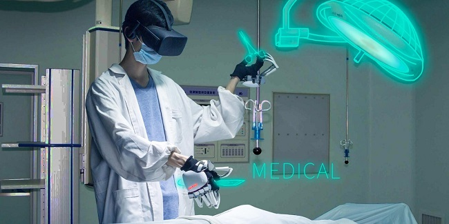

Роль технологий в поддержании психического здоровья
Психическое здоровье - важная проблема, которая затрагивает миллионы людей по всему миру. В то время как традиционные методы лечения, такие как консультирование и медикаментозное лечение, были эффективны для многих людей, технологии все чаще используются для поддержания психического здоровья и благополучия. В этой статье мы исследуем роль технологий в укреплении психического здоровья, а также потенциальные преимущества и недостатки этих разработок.
Одним из ключевых способов использования технологий для поддержания психического здоровья является использование приложений для охраны психического здоровья. Эти приложения предлагают широкий спектр услуг - от отслеживания настроения и предоставления стратегий совладания до подключения пользователей к специалистам в области психического здоровья. Предоставляя пользователям круглосуточный доступ к информации и поддержке, приложения для охраны психического здоровья могут помочь людям управлять своим психическим здоровьем более проактивным и эффективным способом.
Еще одним способом использования технологий для поддержания психического здоровья является терапия виртуальной реальностью (VR). VR-терапия использует иммерсивную среду для имитации переживаний, которые могут помочь людям противостоять страхам и тревогам и преодолевать их. Например, VR-терапия использовалась для лечения фобий, посттравматического стрессового расстройства (ПТСР) и социального тревожного расстройства. Предоставляя людям безопасную и контролируемую среду для того, чтобы они могли встретиться лицом к лицу со своими страхами, VR-терапия может стать высокоэффективным инструментом для лечения психических расстройств.
Социальные сети - еще одна область, где технологии играют важную роль в охране психического здоровья. Хотя социальные сети иногда могут оказывать негативное воздействие на психическое здоровье, такое как повышенная тревожность и депрессия, они также могут быть источником поддержки и связи. Платформы социальных сетей, такие как Instagram и Facebook, предлагают группы поддержки, ресурсы по охране психического здоровья и другие инструменты, помогающие людям общаться с другими людьми, переживающими схожие переживания. Создавая ощущение общности и поддержки, социальные сети могут стать ценным инструментом укрепления психического здоровья.
Несмотря на потенциальные преимущества технологий в укреплении психического здоровья, существуют также опасения по поводу их воздействия. Одна из проблем заключается в том, что чрезмерная зависимость от технологий может привести к отсутствию человеческих связей и взаимодействия, которые необходимы для укрепления психического здоровья и благополучия. Кроме того, существуют опасения по поводу конфиденциальности и безопасности информации о психическом здоровье, распространяемой на цифровых платформах.
В заключение следует отметить, что технологии потенциально могут стать мощным инструментом укрепления психического здоровья и благополучия. Приложения для психического здоровья, VR-терапия и платформы социальных сетей предлагают людям новые способы управлять своим психическим здоровьем и общаться с другими людьми, которые переживают нечто подобное. Однако важно подходить к этим технологиям с осторожностью и обеспечивать их ответственное и эффективное использование. Поступая таким образом, мы можем использовать возможности технологий для поддержания психического здоровья и благополучия людей по всему миру.